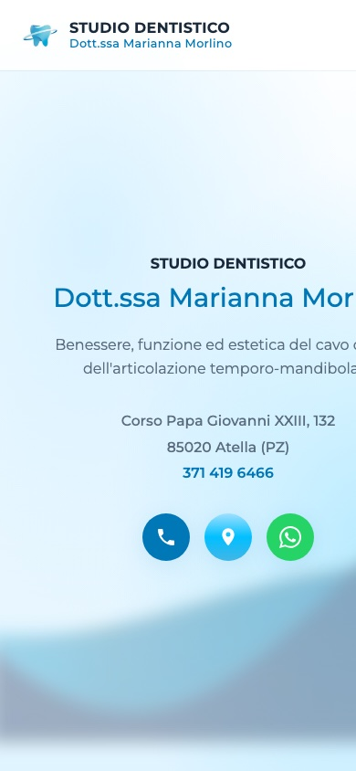
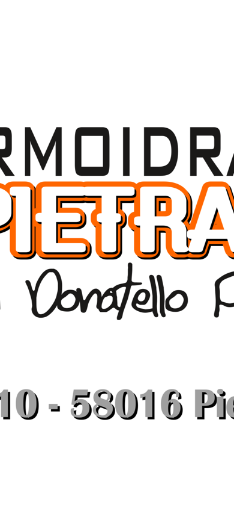
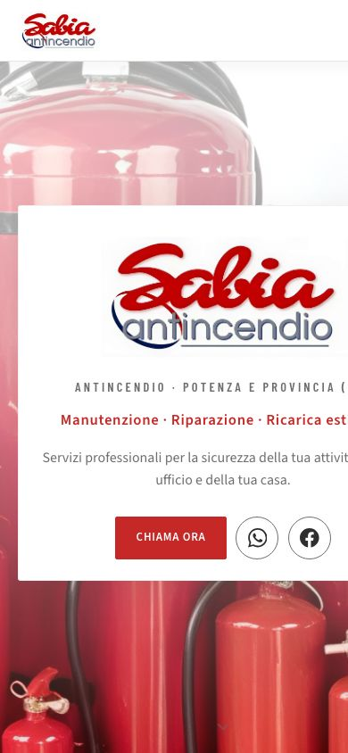
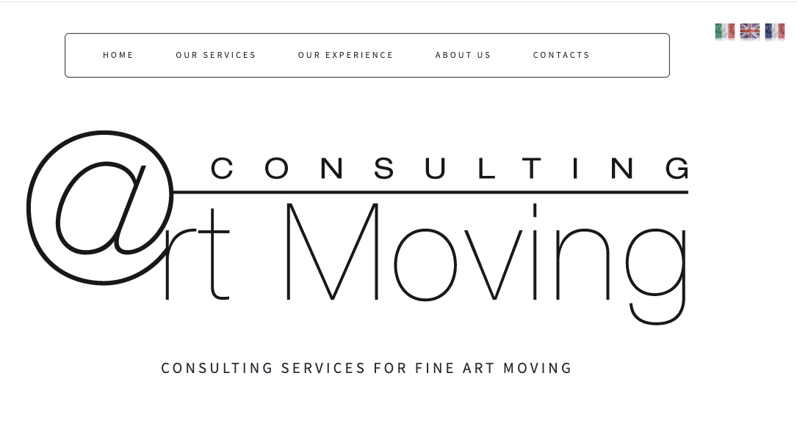
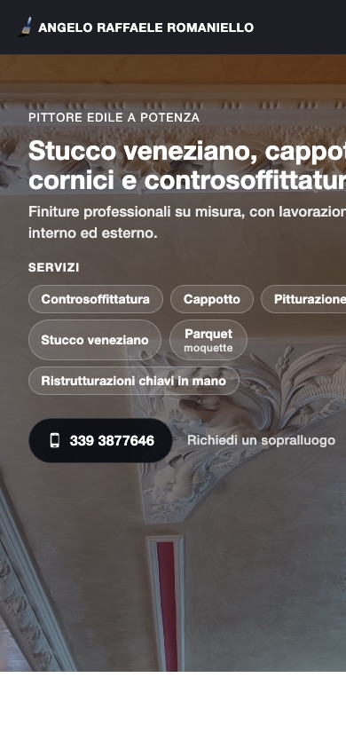
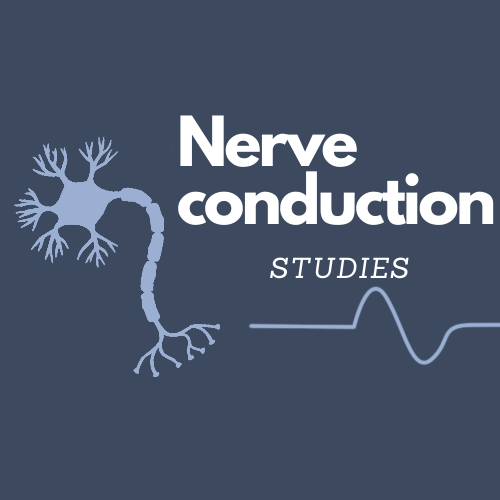
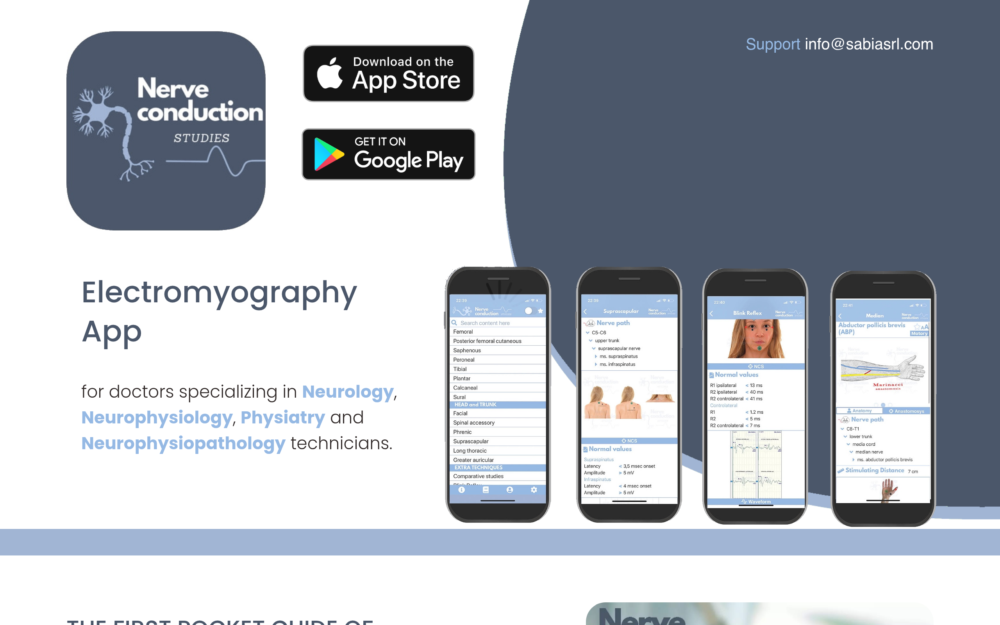
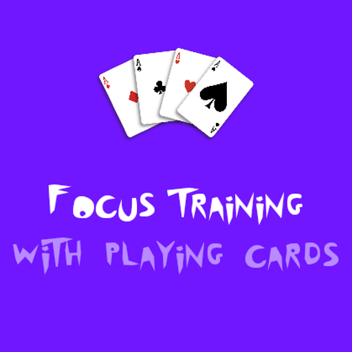
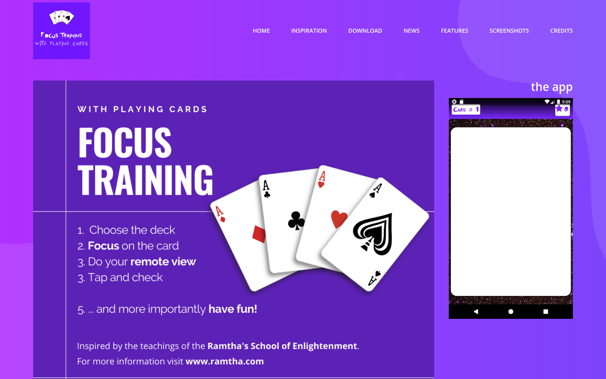

Gym Tonic Wellness Club
gymtonicwellnessclub.it

Siti web per PMI moderni, veloci e ottimizzati SEO, progettati per offrire un’esperienza intuitiva su desktop e mobile e favorire una migliore indicizzazione sui motori di ricerca. Dopo la pubblicazione, supportiamo la crescita digitale con attività continuative di SEO, monitoraggio tramite Google Search Console e analytics, audit tecnici e ottimizzazione dei contenuti, per aumentare nel tempo traffico qualificato, performance e conversioni.
Per la realizzazione di siti web contattaci: sabiasrl@outlook.com
Alcuni progetti realizzati per PMI:


















La mappatura dell'intento parte dal distinguere cosa vuole fare l'utente: informarsi, confrontare, valutare un fornitore o contattare subito. Per i siti PMI questo evita pagine che mescolano troppi obiettivi e non posizionano cluster di query specifici.
Una struttura pratica associa l'intento transazionale alle pagine servizio, quello locale a landing per area e quello informativo a FAQ o guide dedicate. Ogni pagina ha un ruolo chiaro nel funnel e migliora la rilevanza tematica.
Allineate i link interni alle transizioni di intento: i contenuti informativi portano alle pagine servizio, che rispondono alle domande di decisione con prove, segnali di fiducia e call to action chiare.

La base tecnica affidabile inizia da crawlability e igiene dell'indice: pagine chiave accessibili ai bot, canonical corrette e sitemap XML pulita senza URL thin, duplicati o noindex superflui.
Definite canonical coerenti, evitate direttive di indicizzazione contrastanti e mantenete una policy robots che blocchi sezioni a basso valore lasciando scopribile il contenuto strategico. Così limitate il bloat e concentrate il crawl budget.
Rivedete mensilmente la copertura in Search Console per intercettare soft-404, catene di redirect e mismatch canonical. La SEO tecnica è manutenzione continua, non solo setup iniziale.
L'ottimizzazione on-page per il CTR unisce rilevanza e chiarezza: titoli con la query principale all'inizio, meta description con valore concreto, segnali di fiducia e motivo d'azione per il clic.
La gerarchia dei titoli deve favorire scansione e semantica: un H1 chiaro, H2/H3 per i sotto-intenti, etichette di sezione non ambigue per utenti e motori.
Monitorate il CTR per gruppo di query in Search Console e iterate su titoli e snippet delle pagine deboli. Piccoli aggiustamenti su scala spesso portano guadagni senza rifare intere pagine.

La SEO locale dipende da coerenza e specificità: NAP accurati su sito, Profilo Google Business e directory, poi pagine servizio legate alle aree realmente coperte.
Ogni pagina locale deve avere contenuti unici, dettaglio dei servizi, riferimenti territoriali e percorsi di conversione chiari. Template identici con solo il nome città cambiato indeboliscono la rilevanza.
Rafforzate i segnali locali con link interni, FAQ localizzate e recensioni. Con basi tecniche solide migliorate visibilità su Maps e supporto al local pack organico.

Le prestazioni influenzano scopribilità e conversione. I Core Web Vitals offrono un quadro pratico: LCP per il caricamento, INP per la reattività, CLS per la stabilità visiva.
Priorità agli interventi ad alto impatto: dimensionamento e compressione immagini, riduzione risorse render-blocking, caching e controllo degli script. Per le PMI di solito significa mobile più usabile e meno abbandoni.
Monitorate per tipo di pagina, non solo medie sito-wide. Insight su categorie e pagine servizio concentrano lo sforzo dove impatto utente e business sono maggiori.
La SEO post-lancio è un processo continuo. Un ciclo mensile include trend query, performance landing, triage tecnico e opportunità di contenuto dalle ricerche reali degli utenti.
Usate un ciclo chiaro: misurare visibilità, prioritizzare per impatto/sforzo, implementare, validare con ranking, CTR e conversioni. Evita modifiche casuali e rende l'ottimizzazione tracciabile.
Documentate ogni iterazione e replicate ciò che funziona su pagine simili. Nel tempo la SEO diventa un canale di crescita prevedibile, non un progetto una tantum.